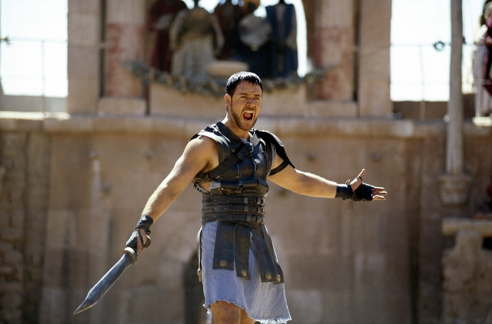
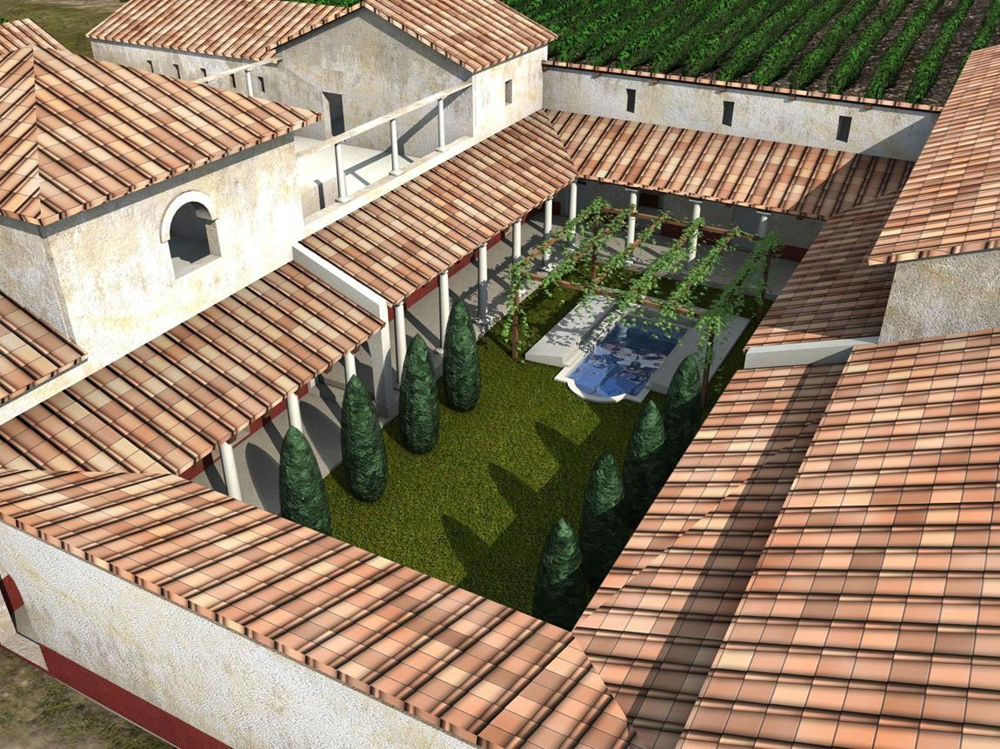
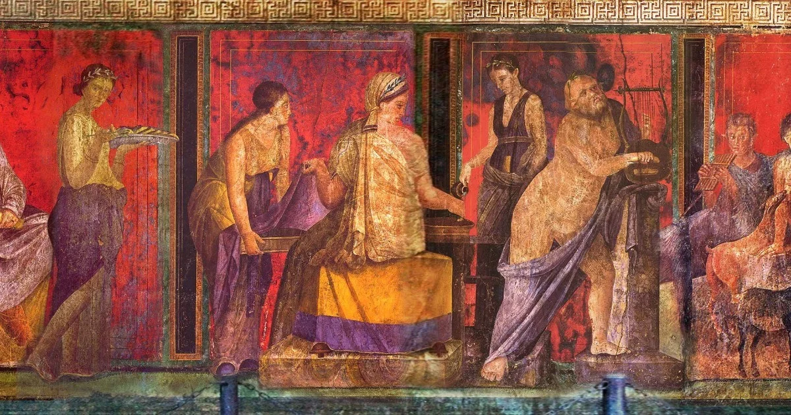
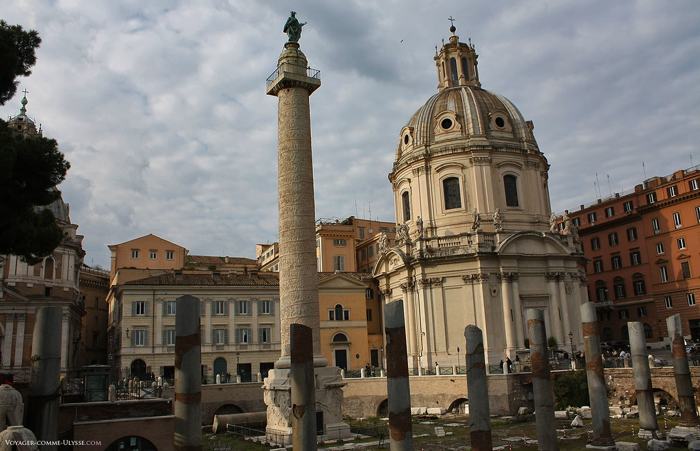

RNN - Roman News Network
Destaques
Arquitetura
Esculturas
Quem somos
Tragédia em Pompeia: Cidade é destruída por lava vulcânica

Gladiador desafia o Imperador em ato de coragem
Grande marco romano: Basílica de Majencio

Conheça as mais novas domus romanas

Popularização das artes em fundo vermelho

Roma é introduzida a Coluna de Trajano